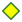

<!doctype html>
<html lang="en">
    <head>
        <meta charset="utf-8">
        <meta http-equiv="X-UA-Compatible" content="IE=edge">
        <meta name="viewport" content="initial-scale=1,user-scalable=no,maximum-scale=1,width=device-width">
        <meta name="mobile-web-app-capable" content="yes">
        <meta name="apple-mobile-web-app-capable" content="yes">
        <link rel="stylesheet" href="css/leaflet.css"><link rel="stylesheet" href="css/L.Control.Locate.min.css">
        <link rel="stylesheet" href="css/qgis2web.css"><link rel="stylesheet" href="css/fontawesome-all.min.css">
        <link rel="stylesheet" href="css/filter.css">
<link rel="stylesheet" href="css/nouislider.min.css">
        <link rel="stylesheet" href="css/leaflet-control-geocoder.Geocoder.css">
        <link rel="stylesheet" href="css/leaflet-measure.css">
        <style>
        html, body, #map {
            width: 100%;
            height: 100%;
            padding: 0;
            margin: 0;
        }
        </style>
        <title></title>
    </head>
    <body>
        <div id="map">
        </div>
        <script src="js/qgis2web_expressions.js"></script>
        <script src="js/leaflet.js"></script><script src="js/L.Control.Locate.min.js"></script>
        <script src="js/multi-style-layer.js"></script>
        <script src="js/leaflet.rotatedMarker.js"></script>
        <script src="js/leaflet.pattern.js"></script>
        <script src="js/leaflet-hash.js"></script>
        <script src="js/Autolinker.min.js"></script>
        <script src="js/rbush.min.js"></script>
        <script src="js/labelgun.min.js"></script>
        <script src="js/labels.js"></script>
        <script src="js/leaflet-control-geocoder.Geocoder.js"></script>
        <script src="js/leaflet-measure.js"></script>
        <script src="js/tailDT.js"></script>
<script src="js/nouislider.min.js"></script>
<script src="js/wNumb.js"></script>
        <script src="data/Provinces_GAB_2.js"></script>
        <script src="data/Routes_3.js"></script>
        <script src="data/Localits_4.js"></script>
        <script>
        var map = L.map('map', {
            zoomControl:true, maxZoom:28, minZoom:1
        })
        var hash = new L.Hash(map);
        map.attributionControl.setPrefix('<a href="https://github.com/tomchadwin/qgis2web" target="_blank">qgis2web</a> &middot; <a href="https://leafletjs.com" title="A JS library for interactive maps">Leaflet</a> &middot; <a href="https://qgis.org">QGIS</a>');
        var autolinker = new Autolinker({truncate: {length: 30, location: 'smart'}});
        L.control.locate({locateOptions: {maxZoom: 19}}).addTo(map);
        var measureControl = new L.Control.Measure({
            position: 'topleft',
            primaryLengthUnit: 'meters',
            secondaryLengthUnit: 'kilometers',
            primaryAreaUnit: 'sqmeters',
            secondaryAreaUnit: 'hectares'
        });
        measureControl.addTo(map);
        document.getElementsByClassName('leaflet-control-measure-toggle')[0]
        .innerHTML = '';
        document.getElementsByClassName('leaflet-control-measure-toggle')[0]
        .className += ' fas fa-ruler';
        var bounds_group = new L.featureGroup([]);
        function setBounds() {
            if (bounds_group.getLayers().length) {
                map.fitBounds(bounds_group.getBounds());
            }
            map.setMaxBounds(map.getBounds());
        }
        map.createPane('pane_OpenTopoMap_0');
        map.getPane('pane_OpenTopoMap_0').style.zIndex = 400;
        var layer_OpenTopoMap_0 = L.tileLayer('https://a.tile.opentopomap.org/{z}/{x}/{y}.png', {
            pane: 'pane_OpenTopoMap_0',
            opacity: 1.0,
            attribution: '<a href="https://www.openstreetmap.org/copyright">Kartendaten: © OpenStreetMap-Mitwirkende, SRTM | Kartendarstellung: © OpenTopoMap (CC-BY-SA)</a>',
            minZoom: 1,
            maxZoom: 28,
            minNativeZoom: 0,
            maxNativeZoom: 18
        });
        layer_OpenTopoMap_0;
        map.addLayer(layer_OpenTopoMap_0);
        map.createPane('pane_OSMStandard_1');
        map.getPane('pane_OSMStandard_1').style.zIndex = 401;
        var layer_OSMStandard_1 = L.tileLayer('http://tile.openstreetmap.org/{z}/{x}/{y}.png', {
            pane: 'pane_OSMStandard_1',
            opacity: 1.0,
            attribution: '<a href="https://www.openstreetmap.org/copyright">© OpenStreetMap contributors, CC-BY-SA</a>',
            minZoom: 1,
            maxZoom: 28,
            minNativeZoom: 0,
            maxNativeZoom: 19
        });
        layer_OSMStandard_1;
        map.addLayer(layer_OSMStandard_1);
        function pop_Provinces_GAB_2(feature, layer) {
        }

        function style_Provinces_GAB_2_0() {
            return {
                pane: 'pane_Provinces_GAB_2',
                opacity: 1,
                color: 'rgba(255,255,255,1.0)',
                dashArray: '',
                lineCap: 'butt',
                lineJoin: 'miter',
                weight: 2.0, 
                fill: true,
                fillOpacity: 1,
                fillColor: 'rgba(0,0,255,0.0)',
                interactive: true,
            }
        }
        function style_Provinces_GAB_2_1() {
            return {
                pane: 'pane_Provinces_GAB_2',
                opacity: 1,
                color: 'rgba(35,35,35,1.0)',
                dashArray: '10,5,1,5',
                lineCap: 'butt',
                lineJoin: 'miter',
                weight: 1.0, 
                fill: true,
                fillOpacity: 1,
                fillColor: 'rgba(133,182,111,0.0)',
                interactive: true,
            }
        }
        map.createPane('pane_Provinces_GAB_2');
        map.getPane('pane_Provinces_GAB_2').style.zIndex = 402;
        map.getPane('pane_Provinces_GAB_2').style['mix-blend-mode'] = 'normal';
        var layer_Provinces_GAB_2 = new L.geoJson.multiStyle(json_Provinces_GAB_2, {
            attribution: '',
            interactive: true,
            dataVar: 'json_Provinces_GAB_2',
            layerName: 'layer_Provinces_GAB_2',
            pane: 'pane_Provinces_GAB_2',
            onEachFeature: pop_Provinces_GAB_2,
            styles: [style_Provinces_GAB_2_0,style_Provinces_GAB_2_1,]
        });
        bounds_group.addLayer(layer_Provinces_GAB_2);
        map.addLayer(layer_Provinces_GAB_2);
        function pop_Routes_3(feature, layer) {
        }

        function style_Routes_3_0() {
            return {
                pane: 'pane_Routes_3',
                opacity: 1,
                color: 'rgba(219,30,42,1.0)',
                dashArray: '',
                lineCap: 'square',
                lineJoin: 'bevel',
                weight: 2.0,
                fillOpacity: 0,
                interactive: true,
            }
        }
        map.createPane('pane_Routes_3');
        map.getPane('pane_Routes_3').style.zIndex = 403;
        map.getPane('pane_Routes_3').style['mix-blend-mode'] = 'normal';
        var layer_Routes_3 = new L.geoJson(json_Routes_3, {
            attribution: '',
            interactive: true,
            dataVar: 'json_Routes_3',
            layerName: 'layer_Routes_3',
            pane: 'pane_Routes_3',
            onEachFeature: pop_Routes_3,
            style: style_Routes_3_0,
        });
        bounds_group.addLayer(layer_Routes_3);
        map.addLayer(layer_Routes_3);
        function pop_Localits_4(feature, layer) {
        }

        function style_Localits_4_0(feature) {
            switch(String(feature.properties['STATUT'])) {
                case 'Capital':
                    return {
                pane: 'pane_Localits_4',
                shape: 'diamond',
                radius: 8.8,
                opacity: 1,
                color: 'rgba(61,128,53,1.0)',
                dashArray: '',
                lineCap: 'butt',
                lineJoin: 'miter',
                weight: 2.0,
                fill: true,
                fillOpacity: 1,
                fillColor: 'rgba(245,253,0,1.0)',
                interactive: true,
            }
                    break;
                case 'Chef-lieu de province':
                    return {
                pane: 'pane_Localits_4',
                radius: 8.0,
                opacity: 1,
                color: 'rgba(0,0,0,1.0)',
                dashArray: '',
                lineCap: 'butt',
                lineJoin: 'miter',
                weight: 2.0,
                fill: true,
                fillOpacity: 1,
                fillColor: 'rgba(250,255,57,1.0)',
                interactive: true,
            }
                    break;
                case 'Chef-lieu de département':
                    return {
                pane: 'pane_Localits_4',
                radius: 5.999999999999998,
                opacity: 1,
                color: 'rgba(0,0,0,1.0)',
                dashArray: '',
                lineCap: 'butt',
                lineJoin: 'miter',
                weight: 2.0,
                fill: true,
                fillOpacity: 1,
                fillColor: 'rgba(250,255,57,1.0)',
                interactive: true,
            }
                    break;
            }
        }
        map.createPane('pane_Localits_4');
        map.getPane('pane_Localits_4').style.zIndex = 404;
        map.getPane('pane_Localits_4').style['mix-blend-mode'] = 'normal';
        var layer_Localits_4 = new L.geoJson(json_Localits_4, {
            attribution: '',
            interactive: true,
            dataVar: 'json_Localits_4',
            layerName: 'layer_Localits_4',
            pane: 'pane_Localits_4',
            onEachFeature: pop_Localits_4,
            pointToLayer: function (feature, latlng) {
                var context = {
                    feature: feature,
                    variables: {}
                };
                return L.circleMarker(latlng, style_Localits_4_0(feature));
            },
        });
        bounds_group.addLayer(layer_Localits_4);
        map.addLayer(layer_Localits_4);
        var osmGeocoder = new L.Control.Geocoder({
            collapsed: true,
            position: 'topleft',
            text: 'Search',
            title: 'Testing'
        }).addTo(map);
        document.getElementsByClassName('leaflet-control-geocoder-icon')[0]
        .className += ' fa fa-search';
        document.getElementsByClassName('leaflet-control-geocoder-icon')[0]
        .title += 'Search for a place';
        var baseMaps = {};
        L.control.layers(baseMaps,{'Localités<br /><table><tr><td style="text-align: center;"></td><td>Capital</td></tr><tr><td style="text-align: center;"></td><td>Chef-lieu de province</td></tr><tr><td style="text-align: center;"></td><td>Chef-lieu de département</td></tr></table>': layer_Localits_4,' Routes': layer_Routes_3,' Provinces_GAB': layer_Provinces_GAB_2,"OSM Standard": layer_OSMStandard_1,"OpenTopoMap": layer_OpenTopoMap_0,}).addTo(map);
        setBounds();
        var i = 0;
        layer_Localits_4.eachLayer(function(layer) {
            var context = {
                feature: layer.feature,
                variables: {}
            };
            layer.bindTooltip((layer.feature.properties['Nom'] !== null?String('<div style="color: #000000; font-size: 12pt; font-family: \'MS Shell Dlg 2\', sans-serif;">' + layer.feature.properties['Nom']) + '</div>':''), {permanent: true, offset: [-0, -16], className: 'css_Localits_4'});
            labels.push(layer);
            totalMarkers += 1;
              layer.added = true;
              addLabel(layer, i);
              i++;
        });
        var mapDiv = document.getElementById('map');
        var row = document.createElement('div');
        row.className="row";
        row.id="all";
        row.style.height = "100%";
        var col1 = document.createElement('div');
        col1.className="col9";
        col1.id = "mapWindow";
        col1.style.height = "99%";
        col1.style.width = "80%";
        col1.style.display = "inline-block";
        var col2 = document.createElement('div');
        col2.className="col3";
        col2.id = "menu";
        col2.style.display = "inline-block";
        mapDiv.parentNode.insertBefore(row, mapDiv);
        document.getElementById("all").appendChild(col1);
        document.getElementById("all").appendChild(col2);
        col1.appendChild(mapDiv)
        var Filters = {"chef_lieu": "str"};
        function filterFunc() {
          map.eachLayer(function(lyr){
          if ("options" in lyr && "dataVar" in lyr["options"]){
            features = this[lyr["options"]["dataVar"]].features.slice(0);
            try{
              for (key in Filters){
                keyS = key.replace(/[^a-zA-Z0-9_]/g, "")
                if (Filters[key] == "str" || Filters[key] == "bool"){
                  var selection = [];
                  var options = document.getElementById("sel_" + keyS).options
                  for (var i=0; i < options.length; i++) {
                    if (options[i].selected) selection.push(options[i].value);
                  }
                    try{
                      if (key in features[0].properties){
                        for (i = features.length - 1;
                          i >= 0; --i){
                          if (selection.indexOf(
                          features[i].properties[key])<0
                          && selection.length>0) {
                          features.splice(i,1);
                          }
                        }
                      }
                    } catch(err){
                  }
                }
                if (Filters[key] == "int"){
                  sliderVals =  document.getElementById(
                    "div_" + keyS).noUiSlider.get();
                  try{
                    if (key in features[0].properties){
                    for (i = features.length - 1; i >= 0; --i){
                      if (parseInt(features[i].properties[key])
                          < sliderVals[0]
                          || parseInt(features[i].properties[key])
                          > sliderVals[1]){
                            features.splice(i,1);
                          }
                        }
                      }
                    } catch(err){
                    }
                  }
                if (Filters[key] == "real"){
                  sliderVals =  document.getElementById(
                    "div_" + keyS).noUiSlider.get();
                  try{
                    if (key in features[0].properties){
                    for (i = features.length - 1; i >= 0; --i){
                      if (features[i].properties[key]
                          < sliderVals[0]
                          || features[i].properties[key]
                          > sliderVals[1]){
                            features.splice(i,1);
                          }
                        }
                      }
                    } catch(err){
                    }
                  }
                if (Filters[key] == "date"
                  || Filters[key] == "datetime"
                  || Filters[key] == "time"){
                  try{
                    if (key in features[0].properties){
                      HTMLkey = key.replace(/[&\/\\#,+()$~%.'":*?<>{} ]/g, '');
                      startdate = document.getElementById("dat_" +
                        HTMLkey + "_date1").value.replace(" ", "T");
                      enddate = document.getElementById("dat_" +
                        HTMLkey + "_date2").value.replace(" ", "T");
                      for (i = features.length - 1; i >= 0; --i){
                        if (features[i].properties[key] < startdate
                          || features[i].properties[key] > enddate){
                          features.splice(i,1);
                        }
                      }
                    }
                  } catch(err){
                  }
                }
              }
            } catch(err){
            }
          this[lyr["options"]["layerName"]].clearLayers();
          this[lyr["options"]["layerName"]].addData(features);
        var i = 0;
        layer_Localits_4.eachLayer(function(layer) {
            var context = {
                feature: layer.feature,
                variables: {}
            };
            layer.bindTooltip((layer.feature.properties['Nom'] !== null?String('<div style="color: #000000; font-size: 12pt; font-family: \'MS Shell Dlg 2\', sans-serif;">' + layer.feature.properties['Nom']) + '</div>':''), {permanent: true, offset: [-0, -16], className: 'css_Localits_4'});
            labels.push(layer);
            totalMarkers += 1;
              layer.added = true;
              addLabel(layer, i);
              i++;
        });
          }
          })
        }
            document.getElementById("menu").appendChild(
                document.createElement("div"));
            var div_chef_lieu = document.createElement('div');
            div_chef_lieu.id = "div_chef_lieu";
            div_chef_lieu.className= "filterselect";
            document.getElementById("menu").appendChild(div_chef_lieu);
            sel_chef_lieu = document.createElement('select');
            sel_chef_lieu.multiple = true;
            sel_chef_lieu.size = 9;
            sel_chef_lieu.id = "sel_chef_lieu";
            var chef_lieu_options_str = "<option value='' unselected></option>";
            sel_chef_lieu.onchange = function(){filterFunc()};
            chef_lieu_options_str  += '<option value="FRANCEVILLE">FRANCEVILLE</option>';
            chef_lieu_options_str  += '<option value="KOULAMOUTOU">KOULAMOUTOU</option>';
            chef_lieu_options_str  += '<option value="LAMBARENE">LAMBARENE</option>';
            chef_lieu_options_str  += '<option value="LIBREVILLE">LIBREVILLE</option>';
            chef_lieu_options_str  += '<option value="MAKOKOU">MAKOKOU</option>';
            chef_lieu_options_str  += '<option value="MOUILA">MOUILA</option>';
            chef_lieu_options_str  += '<option value="OYEM">OYEM</option>';
            chef_lieu_options_str  += '<option value="PORT GENTIL">PORT GENTIL</option>';
            chef_lieu_options_str  += '<option value="TCHIBANGA">TCHIBANGA</option>';
            sel_chef_lieu.innerHTML = chef_lieu_options_str;
            div_chef_lieu.appendChild(sel_chef_lieu);
            var lab_chef_lieu = document.createElement('div');
            lab_chef_lieu.innerHTML = 'chef_lieu';
            lab_chef_lieu.className = 'filterlabel';
            div_chef_lieu.appendChild(lab_chef_lieu);
            var reset_chef_lieu = document.createElement('div');
            reset_chef_lieu.innerHTML = 'clear filter';
            reset_chef_lieu.className = 'filterlabel';
            reset_chef_lieu.onclick = function() {
                var options = document.getElementById("sel_chef_lieu").options;
                for (var i=0; i < options.length; i++) {
                    options[i].selected = false;
                }
                filterFunc();
            };
            div_chef_lieu.appendChild(reset_chef_lieu);
        resetLabels([layer_Localits_4]);
        map.on("zoomend", function(){
            resetLabels([layer_Localits_4]);
        });
        map.on("layeradd", function(){
            resetLabels([layer_Localits_4]);
        });
        map.on("layerremove", function(){
            resetLabels([layer_Localits_4]);
        });
        </script>
    </body>
</html>
